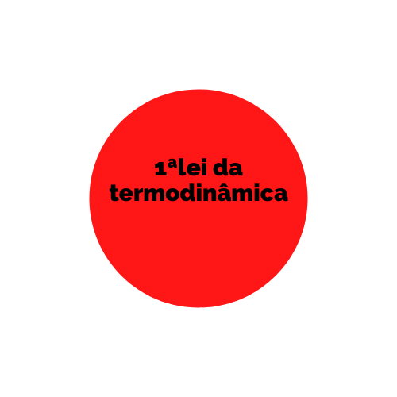

1° Lei: A variação da energia interna de um sistema termodinâmico equivale à diferença entre quantidade de calor absorvido pelo sistema e o trabalho por ele realizado. a primeira lei da termodinâmica aplica o princípio de conservação de energia a sistemas em que a transferência de energia para dentro e para fora do sistema se dá pela transferência de calor e pela realização de trabalho.
2° Lei: A quantidade de entropia de qualquer sistema isolado termodinamicamente tende a incrementar-se com o tempo, até alcançar um valor máximo segunda Lei da Termodinâmica - trata da transferência de energia térmica;